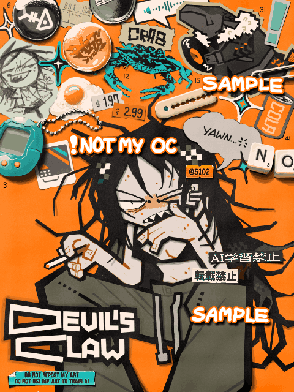

Kina & Joshua（Art trade）

Made with
Tegaki Editor
手書きブログ
で描いたもの。
こちらはアートトレードの絵で、キャラクターは
Tjo
氏のOCです。
中央の女性は背後の蟹（タイワンガザミ）の姿をとることもできる人外の子。右上のレコード盤を持ったピラルクーは彼女の友達。二人とも人外と人間それぞれの姿を持っていてとても可愛い。
平たいステッカーと厚みのある雑貨を描いて背景の空間を埋めるのがすごく楽しい。
2025/06/16
 Kina & Joshua（Art trade）
Kina & Joshua（Art trade）